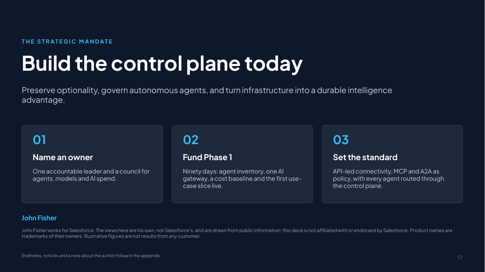
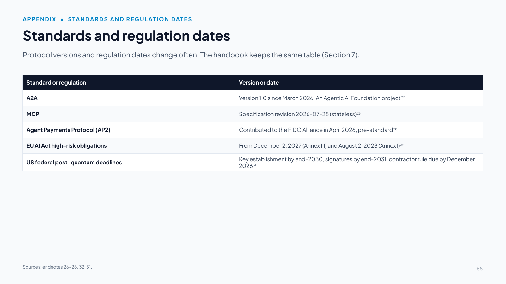

Slides 57–58
Closing and standards dates
Slide 57 Build the control plane today

Download slide 57 as a PowerPoint file (.pptx, 62 KB, with speaker notes)
Slide text
Preserve optionality, govern autonomous agents, and turn infrastructure into a durable intelligence advantage.
01. Name an owner
One accountable leader and a council for agents, models and AI spend.
02. Fund Phase 1
Ninety days: agent inventory, one AI gateway, a cost baseline and the first use-case slice live.
03. Set the standard
API-led connectivity, MCP and A2A as policy, with every agent routed through the control plane.
John Fisher
John Fisher works for Salesforce. The views here are his own, not Salesforce’s, and are drawn from public information; this deck is not affiliated with or endorsed by Salesforce. Product names are trademarks of their owners. Illustrative figures are not results from any customer.
Endnotes, notices and a note about the author follow in the appendix.
Speaker notes
Conclude by asking leadership: "If OpenAI or Anthropic changes their pricing or experiences an 8-hour outage tomorrow, does our business halt?" A well-architected control plane is designed to make the answer no.
Then land the decisions on the slide:
- Name an owner: one accountable executive and a governance council spanning architecture, security, data and the business.
- Fund Phase 1: a 90-day sprint to inventory every agent (Agent Scanners and Registry), route LLM and MCP traffic through AI Gateway, baseline cost and risk, and put the first use-case slice into production with its value measured.
- Set the standard: make API-led connectivity, MCP and A2A enterprise policy, and require every agent, whatever platform built it, to be registered and routed through the control plane.
Closing point: the priority for the next 12 to 24 months is not completing the transition to an agentic enterprise but architecting a stronger foundation for competitive advantage, one that adapts as technologies, interfaces and risks evolve and avoids lock-in to today's platforms [1]. Every phase along the way delivers measurable value, so the foundation earns its keep as it is built [79][81].
Slide 58 Standards and regulation dates

Download slide 58 as a PowerPoint file (.pptx, 62 KB, with speaker notes)
Slide text
Protocol versions and regulation dates change often. The handbook keeps the same table (Section 7).
| Standard or regulation | Version or date |
|---|---|
| A2A | Version 1.0 since March 2026. An Agentic AI Foundation project27 |
| MCP | Specification revision 2026-07-28 (stateless)26 |
| Agent Payments Protocol (AP2) | Contributed to the FIDO Alliance in April 2026, pre-standard28 |
| EU AI Act high-risk obligations | From December 2, 2027 (Annex III) and August 2, 2028 (Annex I)32 |
| US federal post-quantum deadlines | Key establishment by end-2030, signatures by end-2031, contractor rule due by December 202651 |
Speaker notes
Protocol versions and regulation dates change often. Update this slide and the handbook's table (Section 7) together at each edition, and say what changed. At the October 14, 2026 check every entry still held. The federal row now shows that the FAR Council's contractor rule is due by about December 19, 2026 (180 days from the order), and none had been proposed by then [51]. Since January 2026, for example, A2A reached version 1.0 [27] and MCP became stateless [26]. AP2 is pre-standard [28]. The EU AI Act dates reflect the Digital Omnibus amendments [32], and the US federal post-quantum deadlines come from the June 2026 executive order [51].